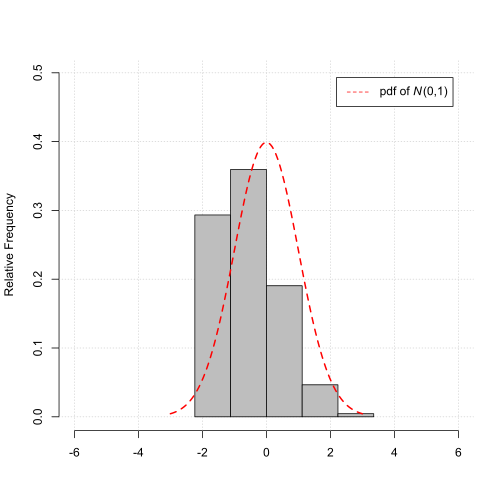
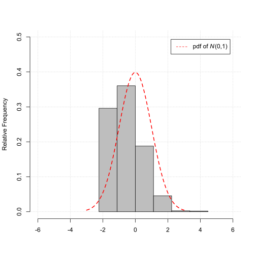

Econometrics and Statistics (520K)
Econometrics and Statistics (520K)
Properties of the Sample Average for increasing Sample Sizes
Motivation
Understand the effect of increasing the sample size \(N\) on the sampling distribution of the sample average as estimator for the probability of success \(p\) of a Bernoulli experiment.
Statistical Model
We are interested in the sampling properties of the sample average as estimator for the mean probability of success \(p\) of a Bernoulli experiment with the probability of success \(p\), i.e.,
$$ \begin{align} Y_i &\sim B\left(p\right), \\ \end{align} $$ with \(p = 0.4\).Simulation
Remember, even if the observations are simulated using the same statistical model, they will not be exactly the same.
Remember, due to the different simulated observations the sample averages will vary across sample draws.
Illustration
Change the number of observations \(N\) to see the effect of the sample size \(N\) on the properties of the sample average \(\overline{Y}\) as estimator for the probability of success \(p\).
Sample size \(N\)
Probability of success \(p\)
Barplot Sample Draw
(Based on one sample draw of size \(N\) on the DGP)
The plot below illustrates the simulation exercise

Histogram of the sample average \(\overline{Y}\)
(Based on \(1000\) sample draw of size \(N\) on the DGP)
The plot below illustrates the Law of Large Numbers (LLN)
As the sample size \(N\) grows the sample average \(\overline{Y}\) gets closer to \(\mu\), i.e.,
$$ \begin{align} \overline{Y} \overset{p}{\to} \mu. \end{align} $$Note, in our case \(\mu\) is the probability of success \(p\).
Histogram of the standardized sample average \(z_{\overline{Y}}\)
(Based on \(1000\) sample draw of size \(N\) on the DGP)
The plot below illustrates the Central Limit Theorem (CLT)
As the sample size \(N\) grows the distribution of the standardized sample average,
$$ \begin{align} z_{\overline{Y}} = \frac{\overline{Y} - \mu}{\sigma_{\overline{Y}}}, \end{align} $$gets closer and closer to the standard normal distribution \(N\left(0, 1\right)\).
Note, in our case \(\mu\) is the probability of success \(p\).